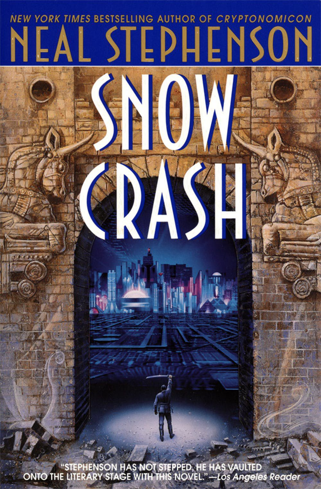
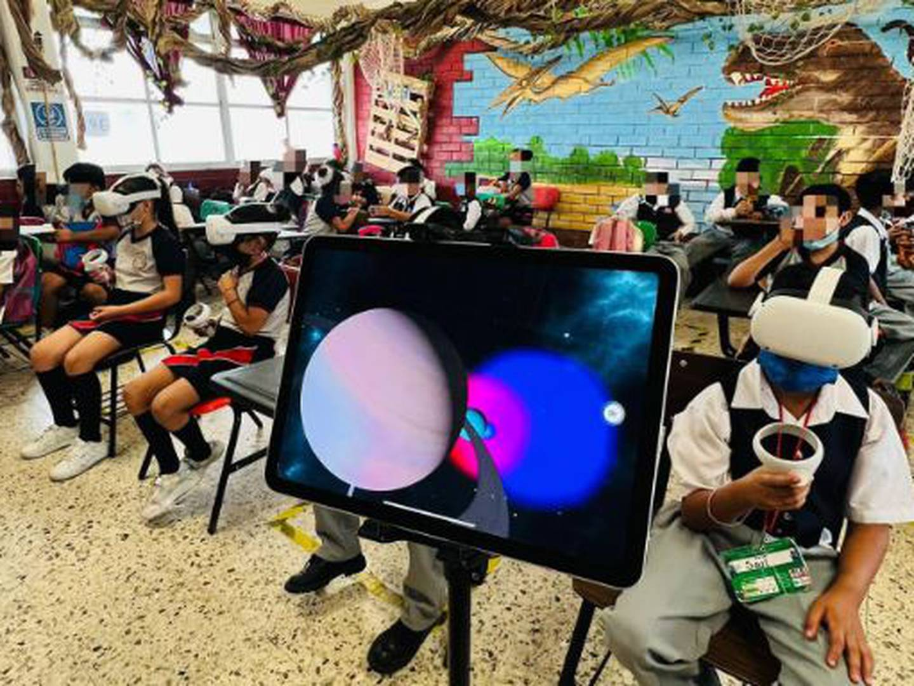
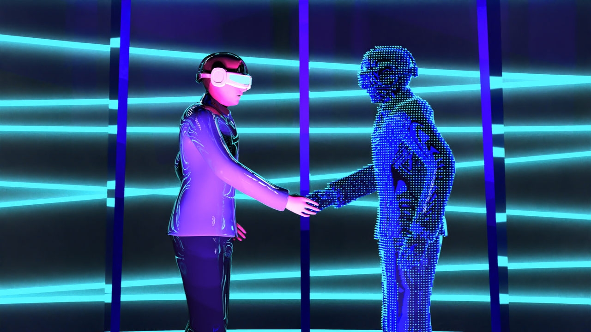

|
|
El metaverso
Qué es el metaverso
El Metaverso es un mundo virtual, uno al que nos conectaremos utilizando una serie de dispositivos que nos harán pensar
que realmente estamos dentro de él, interactuando con todos sus elementos. Será como realmente teletransportarse a un
mundo totalmente nuevo a través de gafas de realidad virtual y otros complementos que nos permitirán interactuar con él.
Los mundos virtuales no son nada nuevo, y existen una gran cantidad de ellos, sobre todo en el sector de los
videojuegos. Tú te creas un personaje o avatar, y te adentras en ese mundo a vivir aventuras a través de tu ordenador.
Sin embargo, el metaverso no busca ser un mundo de fantasía, sino una especie de realidad alternativa en la que podremos
hacer las mismas cosas que hacemos hoy en día fuera de casa, pero sin movernos de la habitación.

Pequeña historia
El término metaverso viene de una novela de 1992 llamada 'Snow Crash', y es un término que se ha asentado para describir
visiones de espacios de trabajo tridimensionales o virtuales. Este metaverso, por lo tanto, significa un mundo virtual
en el que podemos interactuar, y que ha sido creado para parecerse a una realidad externa.

Aspectos que cubre
- Trabajos a larga distancia.
- Criptoactivos.
- Videojuegos.
- Uso en el área medicinal.
- Mejores programas educativos.

Progreso actual
En cuanto al concepto preciso de metaverso por el que apuestan Facebook y otras empresas. La idea sería la de crear un
universo paralelo y completamente virtual, al que podremos acceder con dispositivos de realidad virtual y realidad
aumentada, de forma que podamos interactuar entre nosotros dentro de él, y desde fuera con el contenido que tenemos
dentro.
La clave de este metaverso es que pueda ser totalmente inmersivo, o por lo menos mucho más de lo que es la actual
realidad virtual. Sí, tendremos unas gafas que posiblemente sean parecidas a las actuales para sumergirnos en él, pero
también sensores que registren nuestros movimientos físicos para que nuestro avatar dentro de ese metaverso haga
exactamente lo mismo.
Incluso también se quede hacer que los dispositivos que usemos puedan interpretar nuestras expresiones faciales para que
nuestro avatar en el metaverso pueda recrearnos, y que así el resto de personas con las que estemos interactuando puedan
entender cómo nos sentimos. Vamos, que el lenguaje corporal también forme parte de estas interacciones virtuales.
Qué puede ofrecer el metaverso
El metaverso puede ofrecernos el próximo gran salto evolutivo de Internet... o quedarse en nada porque fracase. Todavía
es muy pronto, y empresas como Facebook sólo están empezando a crear las infraestructuras y los primeros conceptos que
lleven a un futuro donde haya dispositivos capaces de llevarnos a él. Por lo tanto, es más un concepto, un lienzo en
blanco, que una realidad a la que podamos conectarnos hoy.

¿Por qué los videojuegos están vinculados al metaverso?
Debido al énfasis en la realidad virtual 3D, los videojuegos ofrecen la experiencia de metaverso más cercana en la
actualidad. Sin embargo, este punto no se debe solo a que sean 3D. Los videojuegos ahora ofrecen servicios y
características que se trasladan a otros aspectos de nuestras vidas. El videojuego Roblox incluso alberga eventos
virtuales como conciertos y reuniones. Los jugadores ya no solo juegan el juego; también lo utilizan para otras
actividades y partes de sus vidas en el "ciberespacio". Por ejemplo, en el juego multijugador Fortnite, 12,3 millones de
jugadores participaron en la gira musical virtual de Travis Scott dentro del juego.
¿Cómo encajan las criptomonedas en el metaverso?
Los juegos proporcionan el aspecto 3D del metaverso, pero no cubren todo lo que se necesita en un mundo virtual que
puede cubrir todos los aspectos de la vida. Las criptos pueden ofrecer las otras partes clave necesarias, como prueba
digital de propiedad, transferencia de valor, gobernanza y accesibilidad. Pero, ¿qué significan exactamente?
Si en el futuro todos trabajamos, socializamos e incluso compramos elementos virtuales en el metaverso, necesitaríamos
una forma segura de demostrar la propiedad. También debemos sentirnos seguros transfiriendo estos elementos y dinero
alrededor del metaverso. Finalmente, también deberíamos querer jugar un papel en la toma de decisiones que tiene lugar
en el metaverso si esta será una parte tan importante de nuestras vidas.
Algunos videojuegos ya contienen algunas soluciones básicas, pero muchos desarrolladores usan cripto y blockchain en su
lugar como una mejor opción. Blockchain proporciona una forma descentralizada y transparente de tratar los temas,
mientras que el desarrollo de videojuegos está más centralizado.
Los desarrolladores de blockchain también toman influencia del mundo de los videojuegos. La gamificación es común en las
finanzas descentralizadas (DeFi) y GameFi. Parece que habrán suficientes similitudes en el futuro como para que los dos
mundos se integren aún más.
Cuándo será real el metaverso
Actualmente, el metaverso es sólo un concepto que está empezando a construirse. La empresa Meta, antes conocida como
Facebook, ha presentado la idea y anuncia fuertes inversiones para convertirla en real. Pero todavía falta ver si otras
empresas se unen en el esfuerzo para crear las tecnologías que lo hagan posible.
Porque todavía no tenemos las tecnologías que pueden hacer real ese concepto. No tenemos dispositivos de realidad
virtual que realmente nos hagan movernos como si estuviéramos dentro de ese universo de forma realista. También falta
toda la infraestructura en términos de diseño. Es un universo que se quiere crear, pero todavía no tiene regiones,
calles ni nada, únicamente algunas habitaciones virtuales que están usándose para las primeras pruebas.
Durante los próximos años iremos viendo cómo van lanzándose nuevos dispositivos que busquen conectarnos con esta nueva
realidad virtual. La idea es que en el futuro sean muy completos y de precios asequibles, pero hasta que eso sea real,
posiblemente todavía no permitan grandes interacciones y sean bastante caros.
Por lo tanto, todavía estamos muy lejos de poder conectarnos todos a un metaverso en el que interactuar. Faltan
desarrollar ese universo virtual, y también desarrollar la tecnología que haga posible que nos conectemos a él. También
hace falta hacer que, cuando exista, esa tecnología sea asequible para todos.

REFERENCIAS
-
www.xataka.com
-
https://www.v-swaper.com/
-
https://academy.binance.com/
-
¿Qué ofrece hoy el Metaverso?
-
METAVERSO 🌍: EL NUEVO MUNDO VIRTUAL | Qué es y por qué Facebook, Microsoft y otros apuestan por él
|


|